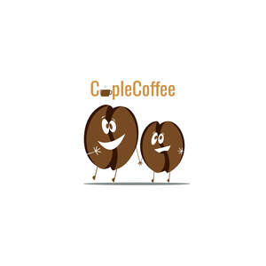

Trade Mark Journal No.2025/043 24 October 2025
UK00004277277 13 October 2025 (11,21,25,30,40)

- Class 11
- Coffee roasters; Roasters (Coffee -); Expresso coffee machines; Coffee machines; Coffee capsules, empty, for electric coffee machines; Coffee makers; Coffee roasting machines; Coffee bean roasting machines; Electric coffee roasters; Electric coffee percolators; Coffee percolators, electric; Percolators (Coffee -), electric; Electric coffee brewers; Coffee brewers, electric; Coffee brewers (Electric -); Electric coffee pots; Electric coffee urns; Coffee makers, electric; Electric coffee makers; Coffee roasting ovens; Refillable coffee capsules; Electrical coffee pots; Electric coffee filters; Coffee filters, electric; Filters (Coffee -), electric; Coffee machines, electric; Electric coffee machines; Domestic coffee percolators [electric].
- Class 21
- Coffee mugs; Coffee cups; Non-electric coffee drippers for brewing coffee; Coffee grinders; Coffee stirrers; Coffee pots; Coffee scoops; Coffee percolators, non-electric; Non-electric coffee percolators; Percolators (Coffee -), non-electric; Coffee filters not of paper being part of non-electric coffee makers; Coffee filters, not of paper, being part of non-electric coffee makers; Coffee pots [non-electric]; Non-electric coffee pots; Coffee services of ceramic; Vacuum coffee bean containers; Coffee brewers (Non-electric -); Vacuum coffee makers; Coffee makers, non-electric; Non-electrical coffee grinders; Coffee grinders, hand-operated; Hand-operated coffee grinders; Non-electric coffee frothers; Coffee services of china; Tea cups.
- Class 25
- Clothing; Knitwear [clothing]; Jackets [clothing]; Ready-to-wear clothing; Woolen clothing; Furs [clothing]; Garments for protecting clothing; Layettes [clothing]; Clothing layettes; Linen clothing; Headbands [clothing]; Headbands for clothing; Gloves [clothing]; Gloves as clothing; Clothes; Aprons [clothing]; Maternity clothing; Kerchiefs [clothing]; Jerseys [clothing]; Denims [clothing]; Shorts [clothing]; Cashmere clothing; Capes (clothing); Oilskins [clothing]; Gabardines [clothing]; Silk clothing; Leather clothing; Clothing of leather; Leather (Clothing of -); Collars [clothing]; Parts of clothing, footwear and headgear; Veils [clothing]; Knitted clothing; Windproof clothing; Hoods [clothing]; Corsets [clothing, foundation garments]; Embroidered clothing; Wristbands [clothing]; Belts [clothing]; Belts for clothing; Bandeaux [clothing]; Rainproof clothing; Waterproof clothing; Casual clothing; Visors [clothing]; Jackets being sports clothing; Jackets (Stuff -) [clothing]; Stuff jackets [clothing]; Bottoms [clothing]; Playsuits [clothing]; Clothing for leisure wear; Ready-made clothing; Latex clothing; Trunks being clothing; Infant clothing; Woven clothing; Drawers [clothing]; Drawers as clothing; Leisure clothing; Clothing for sports; Sports clothing; Ties [clothing]; Athletic clothing; Clothing for children; Muffs [clothing]; Bodies [clothing]; Clothing for babies; Tops [clothing]; Clothing for infants; Clothing for cycling; Weatherproof clothing; Pockets for clothing; Fabric belts [clothing]; Water-resistant clothing; Triathlon clothing; Handwarmers [clothing]; Clothing for skiing; Beach clothing; Thermal clothing; Cowls [clothing]; Chaps (clothing); Men's clothing; Fishing clothing; Braces for clothing; Mitts [clothing]; Dance clothing.
- Class 30
- Coffee; Decaffeinated coffee; Iced coffee; Chocolate coffee; Coffee drinks; Coffee beans; Mixtures of malt coffee with coffee; Coffee beverages; Coffee (Unroasted -); Unroasted coffee; Caffeine-free coffee; Coffee extracts for use as substitutes for coffee; Coffee essences for use as substitutes for coffee; Coffee substitutes [artificial coffee or vegetable preparations for use as coffee]; Malt coffee; Coffee pods; Coffee beverages with milk; Flavoured coffee; Coffee bags; Unroasted coffee beans; Coffee flavorings; Coffee capsules; Mixtures of malt coffee extracts with coffee; Roasted coffee beans; Instant coffee; Freeze-dried coffee; Coffee flavourings; Beverages with coffee base; Beverages with a coffee base; Coffee oils; Espresso; Ground coffee; Coffee based drinks; Sugar-coated coffee beans; Coffee extracts; Coffee in whole-bean form; Beverages made from coffee; Beverages made of coffee; Ground coffee beans; Drip bag coffee; Substitutes (Coffee -); Coffee substitutes; Aerated drinks [with coffee, cocoa or chocolate base]; Coffee essences; Chicory for use as substitutes for coffee; Mixtures of coffee; Coffee mixtures; Coffee based beverages; Cappuccino; Aerated beverages [with coffee, cocoa or chocolate base]; Chicory [coffee substitute]; Prepared coffee and coffee-based beverages; Coffee concentrates; Coffee in brewed form; Mixtures of coffee and chicory; Coffee, teas and cocoa and substitutes therefor; Mixtures of coffee essences and coffee extracts; Mixtures of malt coffee with cocoa; Powdered coffee in drip bags; Ice beverages with a coffee base; Prepared coffee beverages; Coffee essence; Malt coffee extracts; Mixtures of coffee and malt; Coffee [roasted, powdered, granulated, or in drinks]; Chai tea; Tea; Tea beverages with milk; Barley for use as a coffee substitute; Chocolate bark containing ground coffee beans; Extracts of coffee for use as flavours in beverages; Iced tea.
- Class 40
- Grinding of coffee; Coffee roasting and processing.
cuplecoffee limited